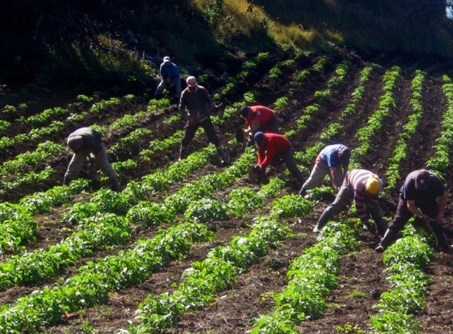

InterAgro es un proyecto que se va a desempeñar como un aplicativo orientado a dispositivos moviles y a su vez una plataforma web; La cual vio la necesidad de ayudar y facilitar la compra y venta de productos del agro colombiano, ya que nuestro público son los campesinos de nuestro país y los compradores mayoristas. Analizando cada labor desde la cosecha hasta el envío y comercialización de este, nos dimos cuenta que durante el transporte de este, el intermediario era el mayor beneficiado en el negocio.
En InterAgro buscamos reducir con las barreras tradicionales de comercializacion, a causa de esto nuestro principal objetivo es incursionar y llevar a la vanguardia la distribucion y el transporte de estos.
El objetivo principal de nuestro programa es establecer una plataforma digital que facilite la comunicación efectiva entre los campesinos y los compradores, con el propósito de mejorar la comercialización de los productos del campesino. A través de esta plataforma buscamos brindar a los campesinos una herramienta que les permita comerciar sus productos de una manera eficiente, al tiempo que brindamos a los compradores acceso directo a los campesinos, ofreciendo ventas seguras y confiables sin intermediarios. Nuestro objetivo es reducir las barreras tradicionales en las ventas de productos del agro colombiano, fomentando así la relación entre campesinos y compradores.
